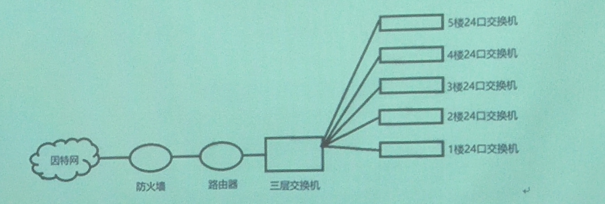

- 根据国际电联关于接入网的规定，接入网是有业务节点接口和用户网络接口的，为传送电信业务提供承载能力的系统，经Q接口进行配置和管理。
- xDSL是以电话线作为传输介质的点对点传输技术。
- 光纤接入网中使用光线路终端作为中心局端的管理和控制设备，光网络单元作为用户端的光纤接入设备。
- 有线接入网分为电话接入 、混合光纤同轴接入、以太网接入、光纤接入。
- EPON下行信号的传输采用TDM广播方式，上行信号的传输采用时分多址方式。
- 解决多用户争用上行共享信道的技术有频分多址、时分多址和码分多址。
- 2B+D即基本速率接口（BRI），包含两个B通道和一个D通道，B通道一般用来传输话音、数据和图像。D通道用来传输控制信令。
- HFC（混合光纤同轴网）可以同时传输有线电视、话音、数据信号。
- ONU的网络侧是光接口而用户侧是电接口。
- 交换机是利用MAC地址来确定数据的目的地址，而路由器利用的是IP地址。
- 业务节点接口是接入网和业务节点间的接口，接入网与用户之间的用户网络接口能够支持目前网络所能提供的各种接入类型和业务。
- 光纤接入网从技术上可分为两大类，有源光网络和无源光网络。
- 在ADSL用户端设备中，高阻滤波分离器可以多个并联使用；低阻语音/数据分离器因并联使用对整条通信线路的阻抗特性有较大影响，因此一般在一个系统中只使用一只。
- 蓝牙有79个射频信道，标称的跳频频率是1600跳/S。
- GPON网络中，ONU到OLT的上行信号的传输采用时分多址，上下行双向传输的复用技术采用波分复用。
- 解决多用户争用上行共享信道的技术有频分多址、时分多址和码分多址。
- 基本速率接口（BRI），包含两个B通道和一个D通道，B通道一般用来传输话音、数据和图像。D通道用来传输控制信令。
- HFC（混合光纤同轴网）可以同时传输有线电视、话音、数据信号。
- ONU的网络侧是光接口而用户侧是电接口。
- 交换机是利用 MAC地址来确定数据的目的地址，而路由器利用的是IP地址。
- 最后一公里可以理解为对接入网的形象称呼。
- EPON网络结构中，点到多点光接入（P2MP）方式下行数据波长为1490nm。
- ISDN不属于宽带接入网。
- xDSL技术中，提供的下行传输速率最高的是VDSL。
- ADSL采用了回波抵消技术，用于消除因上下行信道频段重叠使用而造成的干扰。
- ADSL采用DMT技术，将原电话线路0Hz到1.104MHz频段划分成256个子信道。
- ADSL接入互联网的方式中，专线接入没有用户认证过程，用户终端有自己固定的静态IP地址，用户专享接入链路，自动连接，24小时在线。
- DSLAM不属于ADSL用户端设备。
- WLAN属于固定无线接入网。
- 集线器是单一总线共享式设备。
- HFC（混合光纤同轴网）接入技术是以现有的CATV网络为基础。
- 频分复用的作用是将整个信道从频域上划分为独立的两个或多个部分，使得彼此之间不产生干扰。
- 下列WLAN标准中，802.11n支持的数据传输速率最高。
- 下列WLAN标准中，802.11a不使用2.4GHz频段。
- 蓝牙系统的支持的最大输出功率是100mW。
- 1:8分光器衰减为9dB 。
- EPON的标准是IEEE 802.3ah。
- 光纤接入网根据系统中ODN是否全部由无源器件组成，分为无源光网络（AON）和有源光网络（PON）。
- EPON帧结构中，SLD用来给接收方定位LLID和CRC8域。
- EPON用LLID区分ONU。
- 接入网的功能是交叉连接、复用和传输功能。
- EPON网络结构中，点到点光接入（P2P）方式下行数据波长为1510nm。
- EPON属于宽带接入网。
- xDSL技术中，能提供上下行信道非对称传输的是ADSL和VDSL。
- ADSL采用了FDM复用技术，将整个信道从频域上划分成独立的两个或多个部分，分别用于上行和下行信号的传输，使得彼此之间不产生干扰。
- ADSL采用离散多音频技术，将原电话线路0Hz到1.104MHz频段划分成多个子信道。
- ADSL接入互联网的方式中，PPPOE接入需要对用户的账号和密码进行验证，并对用户终端进行IP地址分配。
- 属于ADSL局端设备的是DSLAM。
- TD-SCDMA 属于移动无线接入网。
- 无线接入从覆盖范围划分，WPAN覆盖范围最小。
- Wi－Fi 属于WLAN技术。
- 国际通用的ISM频段为2.4GHz。
- WLAN标准中，802.11b支持的数据传输速率最低。
- WLAN标准中，802.11b只能使用2.4GHz频段。
- 蓝牙系统的支持的最大数据传输速率是1Mbps。
- 1:32分光器衰减为15dB 。
- 接入网是业务节点接口与用户网络接口之间的一系列传输实体所组成的为传送电信业务提供所需传送承载能力实施系统。
- EPON帧对Ethernet帧的修改不包括FCS。
- EPON用LLID区分ONU。
- 无源光网络简化了供电配置和网管复杂性
- ADSL将整个信道从频域上划分成独立的两个或多个部分，分别用于上行和下行信号的传输，其中下行数据占用频率高，在铜线上的衰减大，传输距离近。
- VDSL传输距离短，必须与FTTx结合。
- EPON上行数据传输使用1310nm波长。
- Modem是调制/解调一词的英文缩略词，代表调制解调器。
- RADSL传输距离最远可以达到5.5公里。
- 回波抵消技术用于上、下行传输频段有重叠的通信系统。
- 组建基础结构的无线局域网时，无线路由器可以启动DHCP服务，为无线终端自动分配IP地址。
- 无源光网络避免了外部电路的电磁干扰和雷电影响。
- VDSL技术的传输速率依赖于传输线的长度。
- GPON下行数据传输使用1490nm波长。
- 无线网卡使用前，必须先安装驱动程序。
- OLT配置中，ont-srvprofile epon profile-id 10 profile-name NTY10的功能是添加ID号为10的业务模板，模板名为NTY10。
- ADSL使用高于3kHz的频带传输数字信号。
- GPON的标准是ITU-TG.984.x
- WiFi不属于WPAN技术
- 下列WLAN标准中，802.11b只能使用2.4GHz频段
- 下列WLAN标准中，802.11b支持的数据传输速率最低
- 无线接入从覆盖范围划分，WWAN覆盖范围最大。
一、 接入网的特点为：
- 对所接入的业务提供传输能力，对业务透明；
- 对用户信令透明传输；
- 兼容现有的各种接入类型和业务；
- 有独立于业务节点的网络管理系统。
二、 简述无源光接入网的概念及组成：
当ODN全部由无源器件（光纤、光无源分路器、波分复用器等）组成，不包含任何有源节点，这种光纤接入网成为无源光接入网（PON）（4分），由光线路终端（OLT）、光网络单元（ONU）和光分配单元（ODN）组成。
三、 简述ADSL的技术特点：
ADSL中使用的调制和复用的技术特点有：
- 使用高于3KHz的频带传输数字信号；
- 使高性能的离散多音频调制编码技术。
- 使用频分复用和回波抵消技术。
- 使用信号分离技术。
四、 简述基础结构无线局域网组网的设备及其功能。
- 带无线网卡的计算机：提供无线网络的接口，实现计算机与无线网络的连接。
- 无线接入点：进行数据发送和接收的集中设备，可以扩展网络覆盖直径。
- 网线：将计算机初始连接无线接入点，对无线接入点进行配置。
五、 比较分析GPON和EPON特性的不同。
- 标准不同：EPON由IEEE 802.3ah标准制定，GPON由ITU-T G.984标准制定。
- EPON适合以太网业务；GPON适合ATM、Ethernet、TDM业务。
- 数据传输速率不同：EPON支持的上行和下行速率均为1.25Gbit/s；GPON支持的上行速率1.25Gbit/s，下行速率均为2.5Gbit/s。
- 支持的分光比不同：EPON支持的分光比为32～64；GPON支持的分光比为64～128。
- 支持OLT和ONU之间的传输距离不同：EPON支持的传输距离为20km；GPON支持的传输距离为60 km。
- 带宽利用率和提供的QoS、运营成本不同：GPON带宽利用率比EPON高，QoS比EPON好，运营成本比低。
- DBA格式和OAM能力不同：GPON的DBA有标准格式，OAM能力强；EPON的DBA由厂家制定，OAM能力弱。
六、 简述以太网中常见的网络设备：
以太网中常见的网络设备有网卡、集线器、交换机、路由器等。
七、 简述MAC层的功能：
MAC层的功能是CM接入的合法性认证、上行通道竞争的冲突分解、CM宽带的请求、分配和管理。
八、 简述ADSL的技术特点。
ADSL中使用的调制和复用的技术特点有：
- 使用高于3KHz的频带传输数字信号；
- 使高性能的离散多音频调制编码技术。
- 使用频分复用和回波抵消技术。
- 使用信号分离技术。
九、 简述光纤接入网的组成部分及各部分功能。
光纤接入网光纤接入网包含了4种基本功能块： OLT光线路终端、ODN光配线网络、ONU光网络单元、AF适配功能块。
- OLT为光纤接入网提供光配线网（ODN）与网络之间的光接口，并提供必要的手段来传递不同的业务。可以分离交换和非交换业务，对来自ONU的信令和监控信息进行管理。
- ODN在OLT与ONU之间提供光传输手段，完成光信号的功率分配任务。
- ONU处理来自ODN光纤上的光信号，为多个小企事业用户和居民住宅用户提供用户侧业务接口。
- AF用于改变ONT/ONU用户侧对UNI的接口，也用于改变OLT对SNI的网络接口，使之满足操作者的需要。
十、 简述无源光接入网的概念及组成。
当ODN全部由无源器件（光纤、光无源分路器、波分复用器等）组成，不包含任何有源节点，这种光纤接入网成为无源光接入网（PON），由光线路终端（OLT）、光网络单元（ONU）和光分配单元（ODN）组成。
十一、实际应用中，可以使用GPON ONU来替换EPON ONU吗？请说明原因。
不能直接替换，EPON是基于以太网的。GPON是基于ATM/GEM的，直接换上去无法工作。如果必须要用GPON来替换，则必须把光路对端的OLT那边尾纤插在GPON单板上。
十二、新建一栋五层的大楼，请你为它进行宽带接入设计，要求网络安全，每层楼都要能满足16个用户网络的需求。请问需要用到哪些设备？画出网络结构示意图。
需要用到的设备：防火墙、路由器、三层交换机（核心网交换机）、二层24口交换机。

十三、IEEE802.11b/g的工作频段怎样划分，应怎样选择信道?
在2.4G频段，从2.4到2.4835GHz，划分为13个子信道，每个子信道带宽为22MHz
选择方式: 避免邻道干扰，采用1、6、11或2、7、12或3、8、13或4、9、14
十四、

Meaningless
1. 接入网的概念和接口，特点，以及“最后一公里”的意义。
- 概念：将用户接入核心网的网络叫做接入网。
- 接口：业务节点接口（SNI）、用户网络接口（UNI）、Q接口（管理配置）。
- 特点：对所接入的业务提供传输能力，对业务透明；
- 对用户信令透明传输；
- 兼容现有的各种接入类型和业务；
- 有独立于业务节点的网络管理系统。
- 最后一公里：（Last mile）从网络指向用户方向，整个网络的末端。是一种形象的称呼，并非实际距离为一公里。
2. xDSL传输介质，“x”代表的含义及区分依据。(比如VDSL,ADSL,SDSL,HDSL等)各自传输速率，ADSL抗干扰技术，子信道的个数，用户端设备，ADSL专线接入特点，VDSL特点，SDSL特点。
- xDSL传输介质：电话线。
- “x”的含义及区分：“x”代表着不同种类的数字用户线路技术，有ADSL、RADSL、VDSL、HDSL、SDSL、IDSL等等，以采取的调制方式、信号传输速率和距离以及上下行信道的对称性不同来区分。
- 各自传输速率：
- ADSL/RADSL：上行512kbit/s—1Mbit/s，下行1—8Mbit/s；
- VDSL：上行3—6Mbit/s，下行13—52Mbit/s；
- HDSL：两对电话线1.544Mbit/s，三对电话线2.048Mbit/s。
- 抗干扰技术：ADSL采用DMT（离散多音频调制）技术，将原先电话线路0Hz到1.104MHz频段划分成256个频宽为4.3125kHz的子信道。每个子信道上采用正交调幅（QAM）调制，承载1~11bit信息。各个子信道根据干扰和衰减情况自动调整传输比特数(QAM)。一般来说，子信道的信噪比越大，在该信道上调制的比特数越多。如果某个子信道的信噪比很差，则弃之不用。DMT技术动态分配数据，提高了频带利用率，将误码和噪声减至最小，提高了系统的传输容量。
- 子信道个数：256
- 用户端设备：分离器，路由，猫。
- ADSL专线接入特点：ADSL专线接入方式的用户拥有固定的静态IP地址，自动连接，没有认证，而且24小时在线。
- VDSL特点：
- 采用频分复用方式进行通信，即上下行使用不同的频率范围；
- 使用QAM或DMT线路编码技术；
- VDSL速率大小通常取决于传输线的长度。
- SDSL特点：数据传输速率可调，速率为256kbit/s—2304kbit/s，调节步长为128kbit/s。
3. 光纤接入网中OLT和ONU的全称及作用，EPON、GPON的标准分别是什么，上下行信号的传输方式，传输波长，分光器衰减计算，光配线网的概念和分类，EPON如何区分ONU，无源光网络作用。EPON光接口性能，EPON和GPON的不同点。
- OLT：光线路终端，为光接入网提供光配线网与本地交换机之间的接口，并提供必要的手段来传递不同的业务，作为局端的管理和控制设备。
- ONU：光网络单元，用于处理来自ODN光纤上的光信号，并为多个小企事业用户和居民住宅用户提供业务接口，作为用户端的接入设备。
- EPON：标准为IEEE802.3ah；上行传输方式为TDMA，下行传输方式为TDM；上行传输波长为1310nm，下行传输波长为1490nm，叠加的RF视频波长为1550nm。
- GPON：标准为G.984.1；上行数据采用基于统计复用的时分多址方式接入，下行数据采用广播方式发送；在一根光纤上双向传输时，下行波长为1480—1500nm，上行波长为1260—1360nm，如果是两根光纤，上下行均为1260—1360nm。
- 光配线网的分类：根据有源跟无源分为AON（有源光网络）和PON（无源光网络）。
- EPON如何区分ONU：根据LLID（用户线路ID）来区分。
- 无源光网络作用：避免了外部设备的电磁干扰和雷电影响，简化了供电配置和网管复杂程度，同时节省了维护成本。
- EPON光接口性能： 1000BASE PX20-U：传输速率为1000Mbit/s，基带传输，一根单模光纤，带PON口，用于OLT设备的上行接口，传输速率为20Km。
分光器衰减计算：

EPON与GPON的不同点：

4. 无线接入网的分类和覆盖范围大小，WPAN，WLAN主要采用的技术。蓝牙、WIFI的双工方式和抗干扰技术，最大输出功率，工作的频段。WLAN协议支持的速率，Ad-Hoc创建时信道的选择，WLAN组网SSID和信道选择的特点。无线局域网组网的设备和作用。
- 无线接入网分类和覆盖范围：
- 无线个域网（WPAN）10M左右；
- 无线局域网（WLAN）100m—2km；
- 无线城域网（MAN）2—20km；
- 无线广域网（WWAN）20km以上。
- WPAN主要采用技术：蓝牙Bluetooth（IEEE802.15.1），超宽带UWB（IEEE802.15.3a），Zigbee（基于IEEE802.15.4 ）和射频识别技术RFID。
- WLAN主要采用技术：wi-fi，OFDM（正交频分复用）技术。
- 蓝牙：采用GFSK调制，通过跳频技术抗干扰，采用时分双工（TDD）方式
- 蓝牙的输出功率为100mW，工作频段为2.4GHZ。
- Wi-fi：采用OFDM技术，通过直接序列扩频抗干扰，采用时分双工（TDD）方式，输出功率为10mW，工作频段为2.4GHZ。
- WLAN各协议支持的速率：
- 802.11：速率最高可达2Mbit/s；
- 802.11b：速率最高可达11Mbit/s；
- 802.11a：速率最高可达54Mbit/s；
- 802.11g：速率最高可达56Mbit/s；
- 802.11n：速率最高可达500Mbit/s。
- WLAN组网SSID和信道选择特点：以相邻房间信道间隔最大为原则分配。
- 无线局域网组网的设备和作用：
- STA：作为无线网络的接口，实现与无线网络的连接；
- BSS：进行无线通信服务；
- DS ：用于连接不同的基本服务单元；
- AP ：是STA和有线网络之间的桥梁；
- ESS：使移动站点实现从该ESS内一个BSS到另一个BSS的漫游；
- 端口：建立单个无线连接的连接点。